In this lab, you will synchronize users from an on-premises AD environment to an Azure AD tenant using Azure AD Connect. Once synchronized, you will enable multi-factor authentication for some test users. You will also explore the Azure AD Application proxy by installing and configuring this for a test internal web application. Lastly, you will look at the compliance and reporting features of Azure AD, such as auditing Reporting.
After completing this lab, you will be able to:
• Install and configure Azure AD Connect and synchronize users
• Understand how to enable multi-factor authentication
• Setup and configure the Azure Application Proxy
• View the auditing and monitoring reports in Azure AD and understand the compliance features
You want to synchronise your on-premises identities to Azure AD for single sign-on in the cloud and enforcement of MFA for access to cloud services. Additionally, you have an existing web application which doesn’t support MFA but you want to use Azure AD to secure access to this applciation.
Install Azure AD Connect
Ordinarily you would register your company’s domain name within Azure AD such that any synchronized users can have that as their suffix in the cloud. As this is for testing only all users will assume the
View the Synced users
https://portal.azure.com and, if necessary, sign in with your Azure accountIn this exercise you will setup and configure MFA for your admins, this is especially important for cloud accounts which may be susceptible to password guessing attempts.
Note: Perform all steps on ADMIN-01
Enable EMS features
From a browser, navigate to https://portal.azure.com and, if necessary, sign in with your Azure account
On the left hand side scroll down to Azure Active Directory and click on Licenses* under Manage 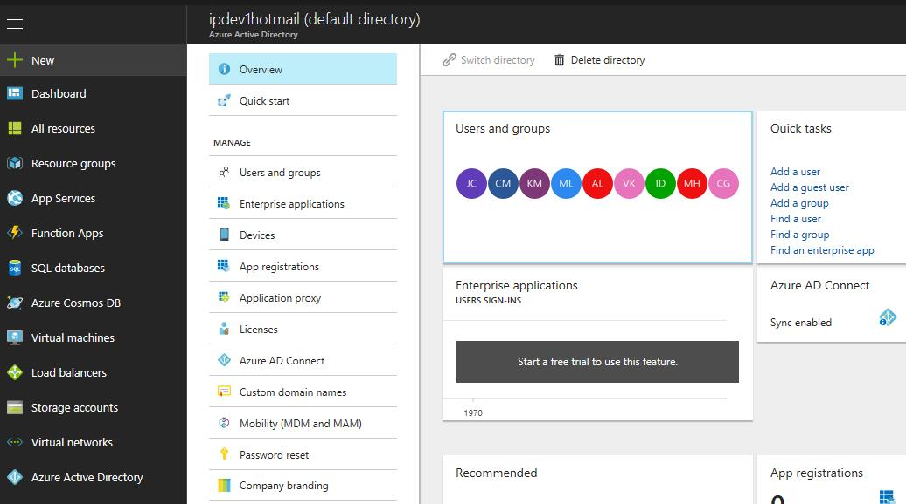
At the top of the page select All Products and then on Try/Buy 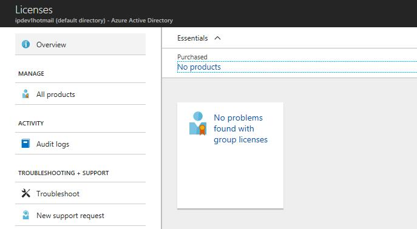
Activate the Enterprise Mobility Suite trial 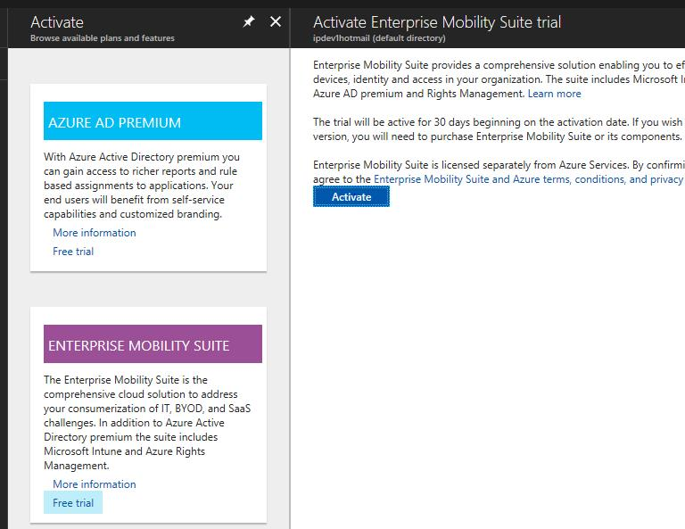
Note, MFA can be licensed and used in many ways, here is a breakdown of the options:
• MFA is free for Azure AD users who hold an administrator role
• A subset of MFA features is licensed with Office 365
• Full MFA comes with an Azure AD Premium license
• MFA can be paid for as you go, either per user authentication or per userFor this exercise we will assign an Azure AD Premium license and configure MFA via the Azure AD portal.
Enable MFA
Configure MFA for a user and test
Open an new InPrivate browsing session in IE and navigate to https://myapps.microsoft.com, when requested enter the username of the user you have just enabled MFA for, this will be the .onmicrosoft.com address as seen in the Azure AD portal. Click Continue to proceed to the next step
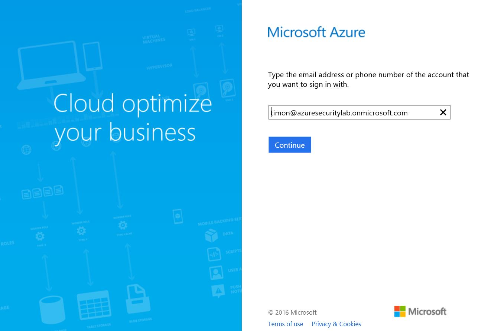
Note, you may need to sign out of the myapps portal if it automatically logs you in, if you do just sign back in and specify the test user
The password is the same password as the CONTOSO\labadmin account 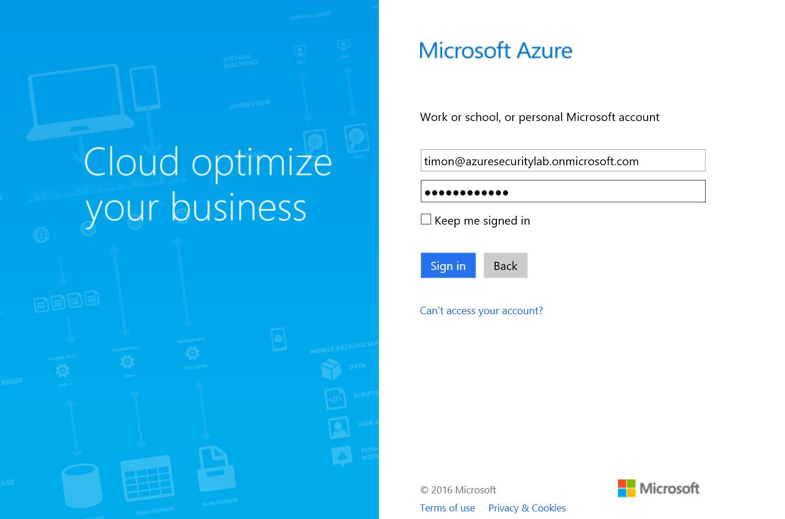
As we have enabled this user for MFA the user is forced to configure this, click Set it up now 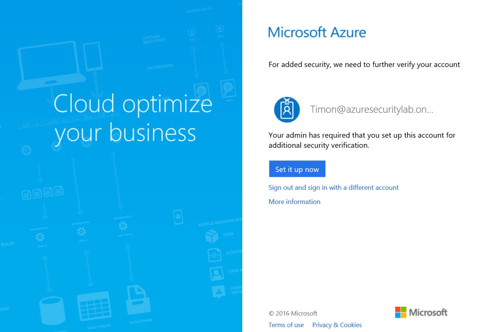
Select to use Authentication Phone and enter your phone number so the MFA service can contact you. Either select via text message or phone call. When configured click Contact Me 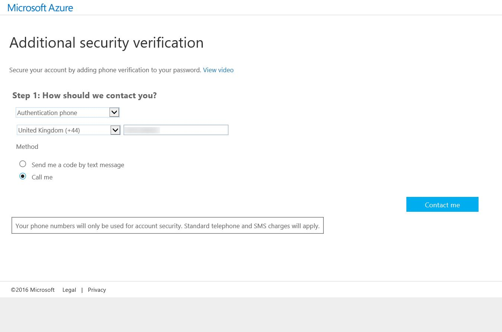
The MFA service will now contact you, answer the phone call and follow the prompts or when you get the text enter the code 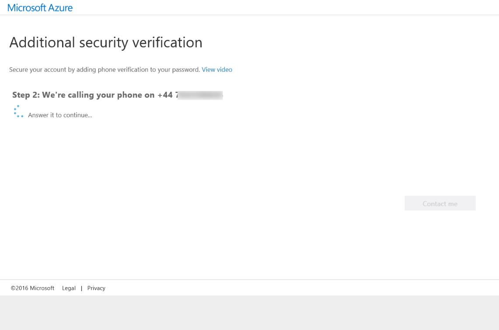
When the authentication has been verified you will be presented with a screen which gives you an app password, these passwords are used for application which can’t or don’t support MFA. Click Finished 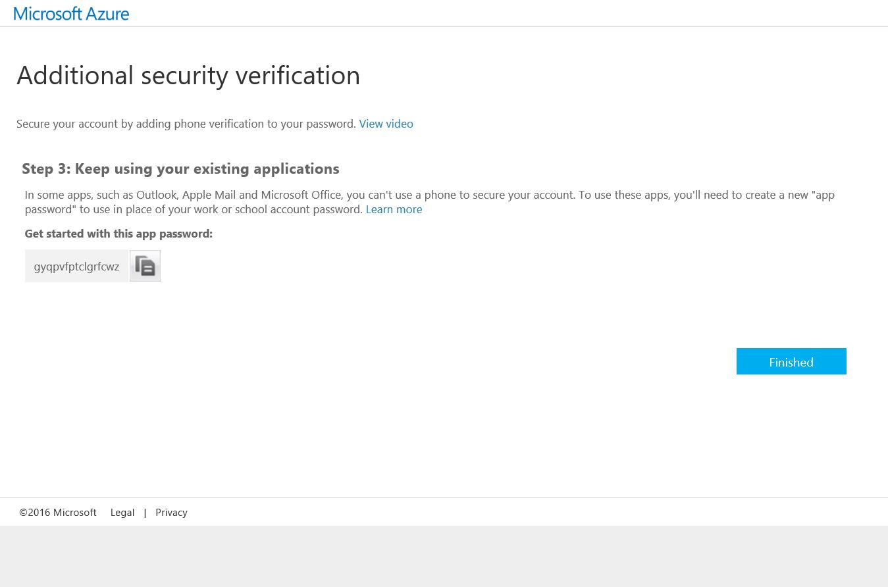
MFA has now been configured for this user, sign out and sign back in to test MFA. Once you’ve entered your password you will be contacted by the method that you supplied during initial setup.
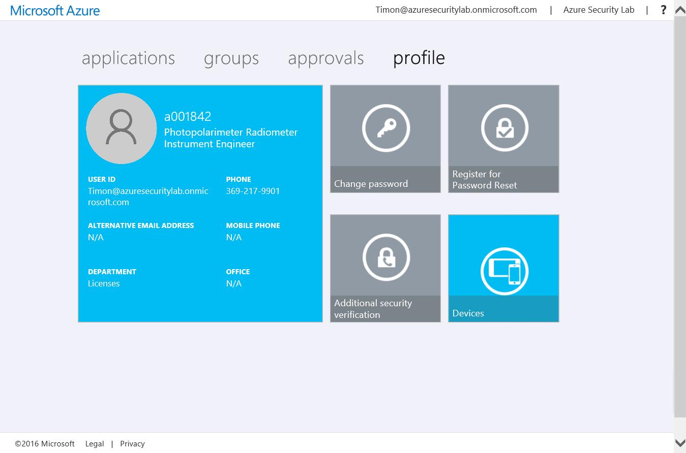
Once you have signed in to myapps portal a user can configure their MFA options by going to the Profile link and click Additional security verification
MFA options can be changed here, or a new MFA provider specified. If you have time as an optional lab you can setup the mobile app. Download the Azure Authenticator app on your smartphone and then go through the configuration options for Azure Authenticator App. Once configured you can use this to sign into Azure AD services instead of having a phone call or text message 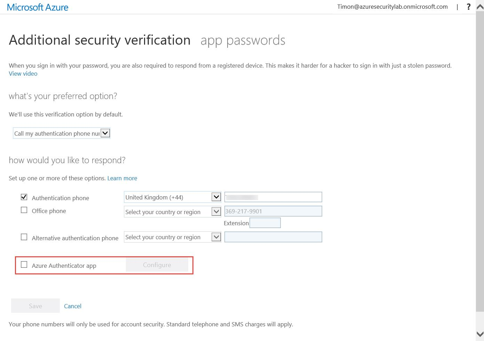
In this exercise you will deploy a Contoso web application and configure Azure AD Application Proxy to publish this application over the internet
Note: Perform all steps on ADMIN-01
Enable Application Proxy
http://portal.azure.com and, if necessary, sign in with your Azure accountInstall Application Proxy Connector
Switch to SERVER-02
On the Appliction Proxy page on the Azure Active Dirctory menu, click the Download Connector link 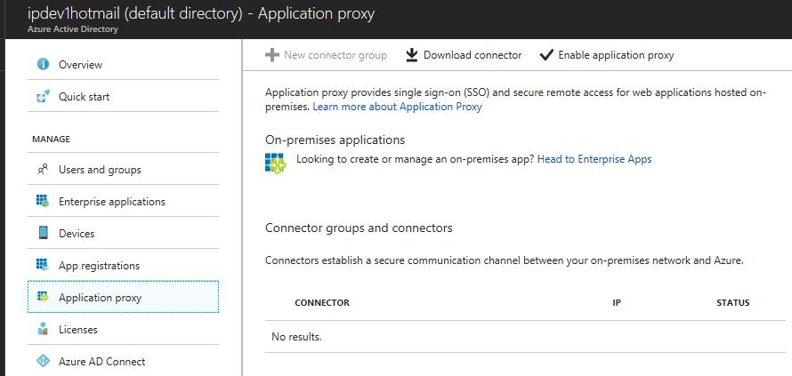
Agree to the license agreement and click Download 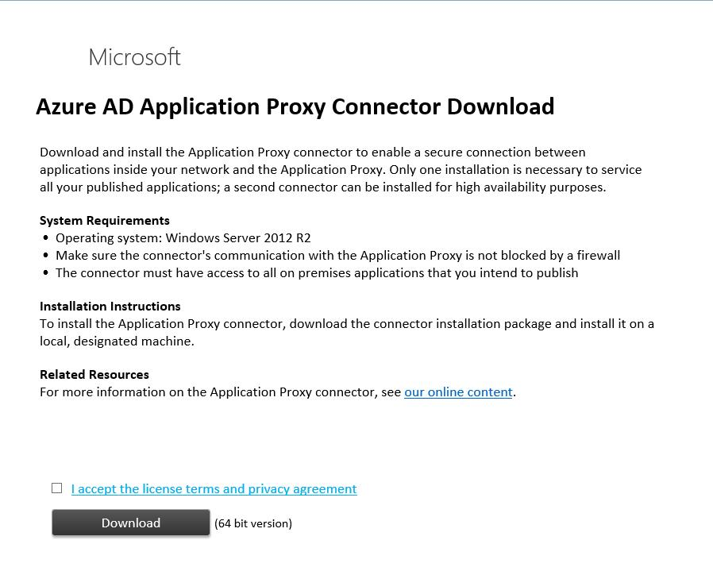
Save the application proxy onto SERVER-02 and then kick off the install. Agree to the license and click Install 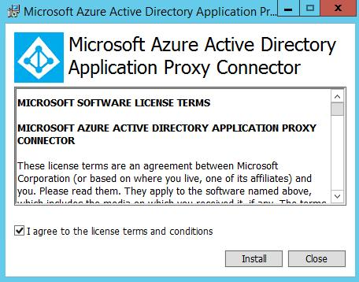
When prompted sign in with the Azure AD global administrator account (i.e user@customname.onmicrosoft.com)
Back in the Azure portal click the Application Proxy link again and the server should now show up as a registered connector 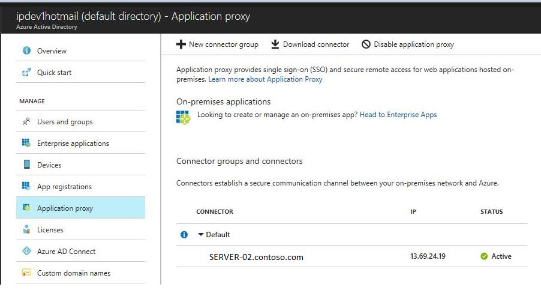
Add the on-premises application
Click your directory within Azure Active Directory and navigate to the Enterprise Applications tab then click New Application at the top of the screen 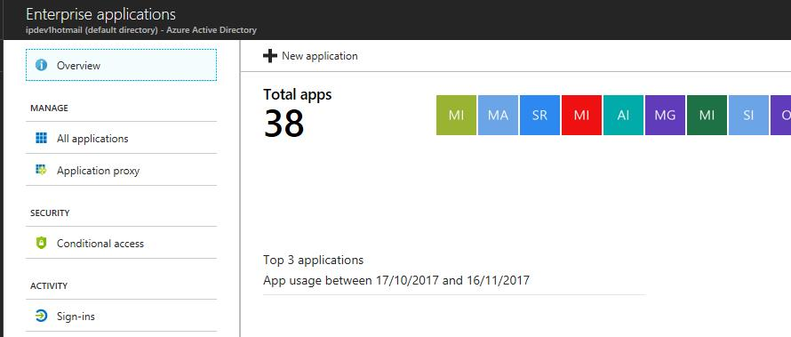
Select On-premises application 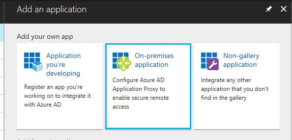
Enter the following information:
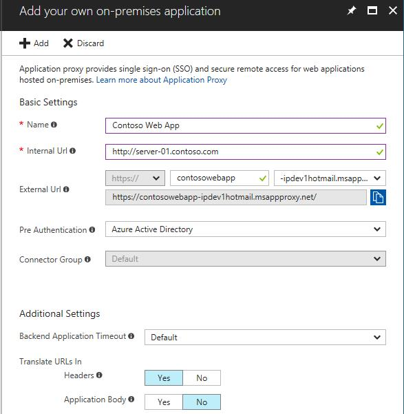
Name: Contoso Web App
Internal URL: http://server-02.contoso.com
Preauthentication Method: Azure Active Directory
Note that by selecting Azure AD as the preauthentication method any users accessing the internal application over the internet will first be authenticated by Azure AD, which means that you can get the benefits of the logging and alerting and also MFA for you internal app
Click the Add to continue
- By default the application is published with a DNS name of “
- .msappproxy.net - If you have configured a custom domain name for Azure you can specify your own suffix, however you will need to ensure the DNS is correct and that you have uploaded an SSL certificate
- SSL must be enabled for all proxied apps
- You can change the pre-authentication method from Azure AD to pass-through if you don’t want to pre-authenticate users with Azure AD
- If your internal app is using integrated Windows authentication then you can enable Kerberos constrained delegation for the proxy, however Azure AD pre-authentication must be enabled and you must be able to map the Azure AD username to an internal user.
- You can upload your own logo which will be used for the application
Enable user access for the application
Navigate to the Enterprise Applications menu within Azure Active Dirctory. Open the Application Proxy tab of the Contoso Web App application 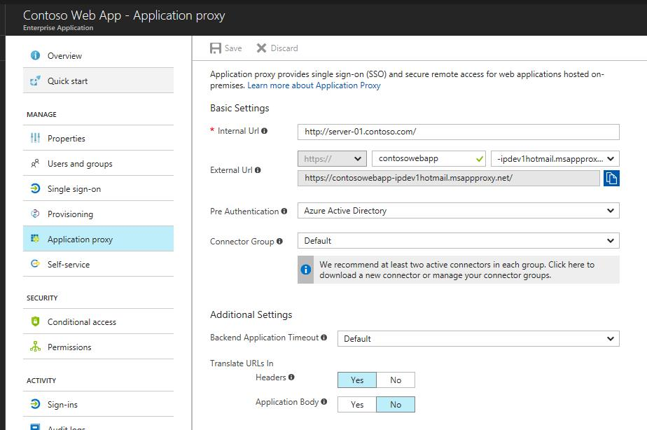
To enable users to access the application, it’s necessary to grant them a license and also to assign their access within the application. We’ll now add two new groups to which license and application access will be assigned. Contoso Web App Users and Contoso Web App Admins.
Navigate to Users and Groups in the Azure Active Directory and select All Groups then New Group
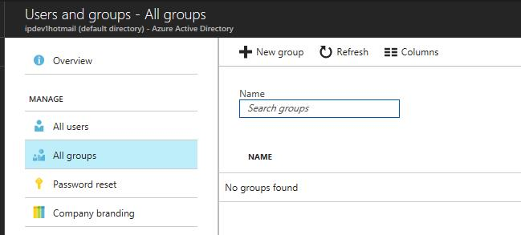
Name the group Contoso Web App Users and add Athea Larrick and Anna Copenhaver as members 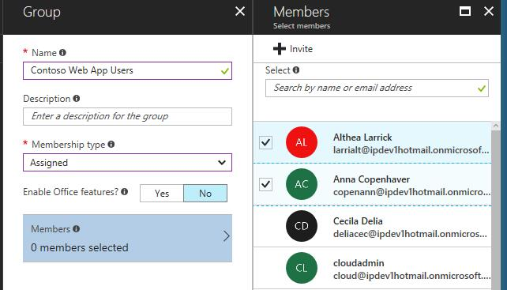
Repeat the process to create Contoso Web App Admins, this time adding Cecila Della and Colton Gagliano as members 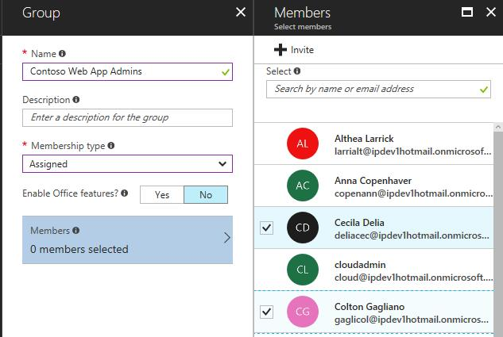
Go into the group properities and on the Licenses tab, select assign. It’s necessary to do this for both the groups just created 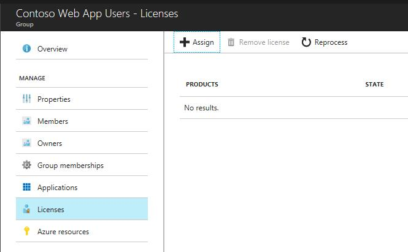
Assign the EMS license, along with all the options enabled 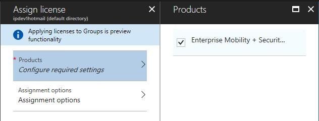 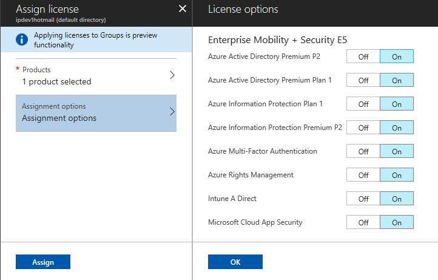
Ensure licenses were assigned to both the Contoso Web App Users and Contoso Web App Admins groups. On the main Azure Active Directory menu, select Licenses --> Products --> Enterprise Mobility and Security --> Licensed Groups. You should see both groups listed 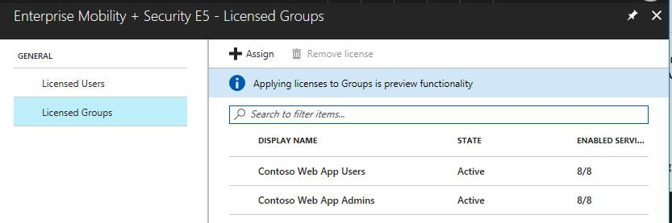
Now find the Contoso Web App under Enterprise Applications in the main Azure Active Directory menu. Under Users and groups click Add user 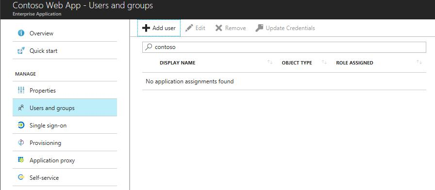
Assign the Contoso Web App Users and Contoso Web App Admins group access 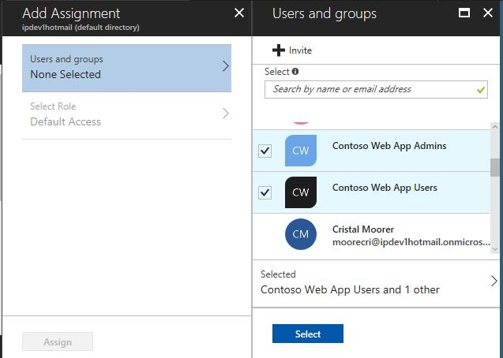
The Azure App Proxy is now configured to present the internal sample application over the internet and to pre-authenticate users with Azure AD
Test Application Proxy
On ADMIN-01 machine open a new IE Window and navigate to http://myapps.microsoft.com (this will test the access to the web app from the internet). When prompted enter the username for Anna Copenhaver which you added into the Contoso Web App Users group
The username is copenann@(your tenant).onmicrosoft.com and the password is the same as CONTOSO\labadmin password 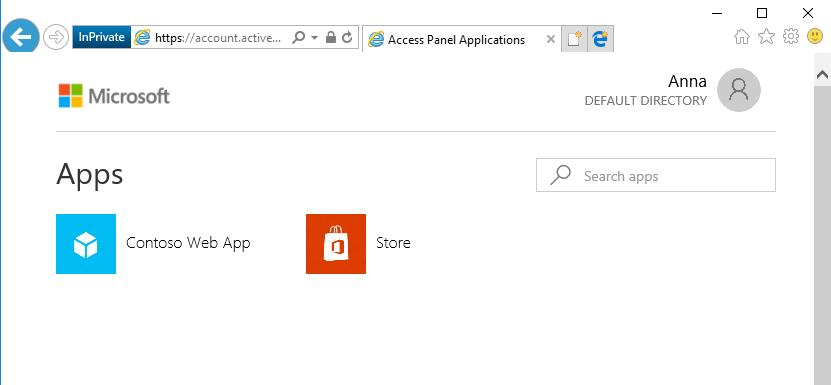
Notice that the Contoso Web App is listed in the panel. Click the logo for the app. A new tab opens and the internal web app is shown. Note that we don’t get prompted for credentials again as we are using SSO from the first login to pass through to the internal application 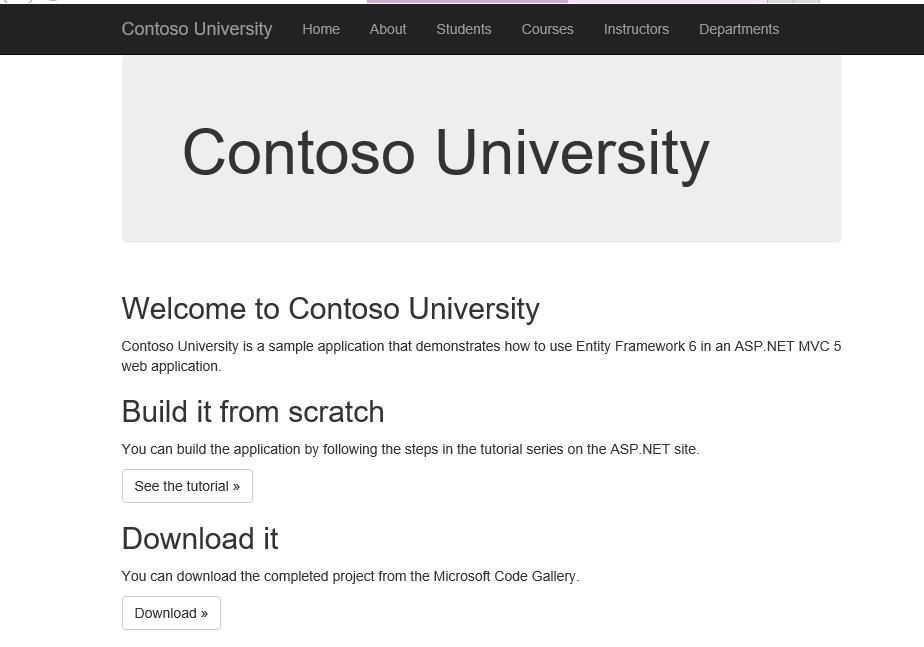
Also note the URL for the application is the same as was configured in the Azure AD portal
You want to ensure the application admins use MFA when they log in and access Contoso Web App. In this exercise you use Contitional Access to provide additional security controls on Contoso Web App.
Note: Perform all steps on ADMIN-01
Create the Conditional Access Policy
In the Azure Active Directory menu, select Conditional Access and then click New Policy
Add the Contoso Web App Admins group in the Include menu
Select the Contoso Web App which whill receive this policy
Select Conditions and review all the options for your awareness.
Now under Access Controls, select Grant access and Require multi-factor authentication
Complete the creation of the policy, ensure that Enable policy is on
Test the Conditional Access Policy
We’ll now sign-in to Contoso Web App as a member of the Admin group to verify our Conditional Access Policy is working as planned.
On the ADMIN-01 machine open a new IE Window and navigate to http://myapps.microsoft.com (this will test the access to the web app from the internet). When prompted enter the username for Colton Gagliano which you added into the Contoso Web App Admins group.
The username is gaglicol@(your tenant).onmicrosoft.com and the password is the same password as CONTOSO\labadmin
After clicking Contoso Web App, you should now get a prompt to sign up for MFA before access to the app
When this lab is closed, the AAD Connect VM will be destroyed and to avoid sync errors being received by the administrator, we will turn off sync manually via PowerShell.
Open a PowerShell prompt on ADMIN-01
Type the following command and login using your Azure AD Global Admin identity and password
Connect-MsolService
Run the following command to disable sync
Set-MsolDirSyncEnabled -EnableDirSync $false
Congratulations, you have finished this lab.
| Username | CONTOSO\labadmin |
| Password | Pass@w0rd$$$ |
| Username | CONTOSO\labadmin |
| Password | Pass@w0rd$$$ |
| Username | CONTOSO\labadmin |
| Password | Pass@w0rd$$$ |
| Username | CONTOSO\labadmin |
| Password | Pass@w0rd$$$ |
| ID | 7898966 |
| Host | TPAHost179 |
| Datacenter | US East |